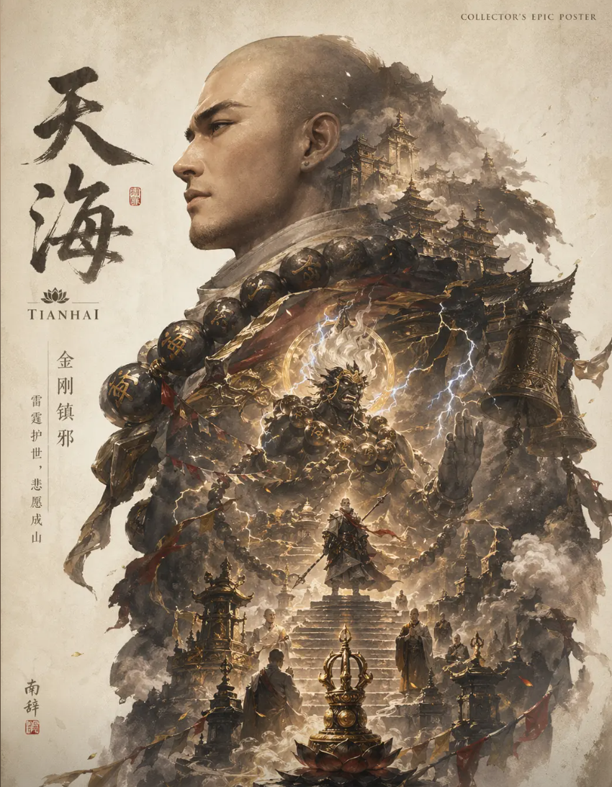

天海曾是隐族使者，后叛离隐族，试图封印不朽面具。他曾辅佐炎武皇帝统一无极帝国，但因皇帝晚年性情大变而深感愧疚，走上云游之路。
技能介绍
金钟罩（F1）：受击时可释放，抵挡物理伤害并反弹远程攻击，冷却 25 秒。
金钟罩・振刀（F2）：无法受击释放，可振掉敌人蓝色霸体招式武器，用于反制。
金刚伏魔（V）：大招，化身金刚回复体力，持续 40 秒，可抓取敌人，空旷处效果更佳。
玩法技巧
小技能运用：F1 用于紧急防御，F2 可 “震 f 震” 三连操作反制蓝霸体，反弹远程攻击。
大招策略：V1 适合新手（减伤），V2 适合持久战（抓人回血），注意弱点防护。
天赋推荐：新手点减伤，通用选纳元天赋提升续航。
角色特点
生存能力强：金钟罩可抵挡伤害和负面效果，大招提供高额坦度。
控制核心：大招抓取敌人，三排中能扭转战局。
上手简单：技能机制直观，适合新手入门。
天海凭借独特技能和背景故事，成为《永劫无间》中兼具实力与深度的英雄。
